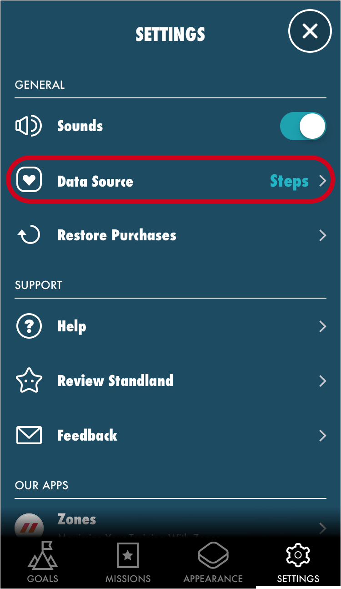

Important:
In Standland, moving around more than one minute (more than 80 steps) per hour counts as one stand.
This app reads activity data from Apple's Health app (HealthKit) for counting stands.
• For Apple Watch users: Stand Hours (1 stand hour = 1 stand)
• For iPhone users: Steps (more than 80 steps per hour = 1 stand)
Open Settings in Standland, and tap Data Source to choose.
If you are using Apple Watch, choose "Stand Hours". Otherwise, choose "Steps".

Allow read permission in Apple's Health app.
Standland needs access to the Health app
If you allow the read permission and still there is no data, please open the Health app, and see if there is Steps data (or Stand Hours data if you use Apple Watch).
If the Health app is unstable, third party apps cannot access the data.
In that case, restarting your iPhone might fix the issue.
Restart your iPhone